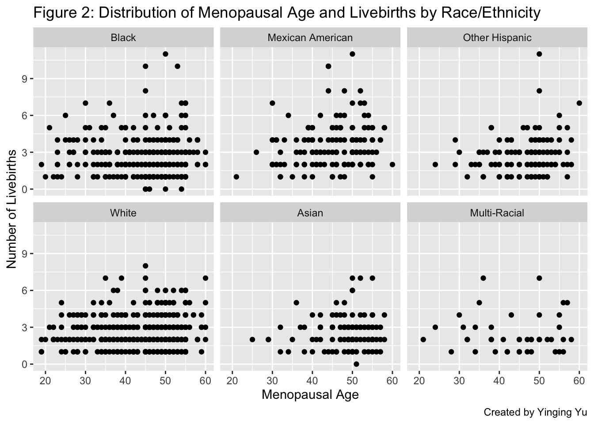
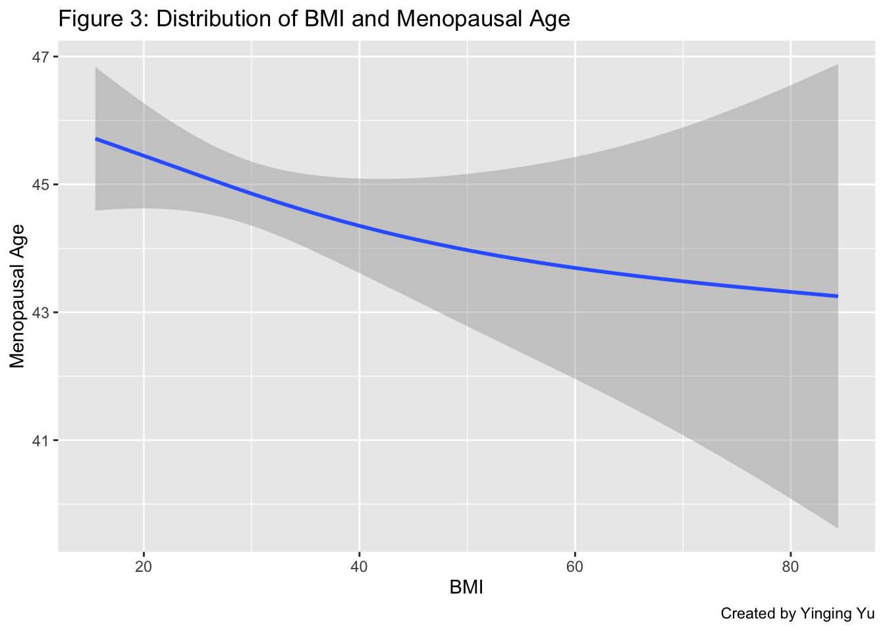

Menopause is a natural biological event triggered by the decline in ovarian follicular function and a reduction in circulating blood estrogen levels (Greendale, Lee, and Arriola 1999). According to the World Health Organization (WHO 2021), the majority of women experience menopause in their forties and fifties, typically defined as twelve consecutive months without menstruation, with no other underlying cause. Notably, during pregnancy, women do not have their regular menstrual period for approximately nine months due to the profound impact on ovarian activity.
Research Objective
The objective of this study is to investigate whether the age at which natural menopause occurs is influenced by the number of childbirths among American women. This research utilizes data from the 2017-18 National Health and Nutrition Examination Survey (NHANES). Our hypothesis posits that an increased age at menopause is associated with a higher number of childbirths.
Note:
This analysis is conducted for researchers, doctors, or anyone who is interested in the risk factors of menopause.
Methodology
Study population
Performed by the National Center for Health Statistics (NCHS) within the Centers for Disease Control and Prevention (CDC), the NHANES is a program of cross-sectional studies collecting data regarding the health and nutritional status of Americans. This study is an analysis of the 2017-2018 data for female participants located in different counties across the nation, including demographics, socioeconomic, body measurements, reproductive health-related information gathered by interviews and physical examinations. The dataset can be download on the (NHANES CDC 2019) website.
Measures
The outcome of interest in this study is the age at natural menopause of a participant. Age at menopause was obtained from the self-reported question: ‘About how old were you when you had your last menstrual period?’ In this study, we defined age at menopause as the age in years when the woman had her last menstrual period.
The primary covariate in this analysis is the number of childbirths. The number of childbirths was obtained from the self-reported questions: ‘How many of your deliveries resulted in a live birth?’ In this study, we used number of childbirths as a continuous variable (0–10 childbirths).
After reviewing previous literatures, the following factors are included as additional covariates to address for potential confounding. Age in years was analyzed as continuous variable. Smoking status was dichotomized as “never” and “ever”. Alcohol use was dichotomized as “never” and “ever”. Educational level was categorized as “Less than high school diploma”, “High school diploma”, “College” and “College graduate or above”. Body mass index was analyzed as continues variable measured in kg/m2.
Statistical Analysis
Data of the outcome variable and covariates will be extracted from five sub-data files and combined into a single analytic dataset prior to analysis.
ID age_meno livebirths pills smoke drink bmi age_sur race education
1 93705 50 2 1 1 1 31.7 66 4 2
2 93708 48 3 1 2 2 23.7 66 6 1
3 93709 NA NA NA 1 NA 38.9 75 4 4
4 93714 52 1 1 1 1 39.9 54 4 4
5 93719 NA NA 2 NA NA NA NA NA NA
Data Dictionary
The variables on the above data set are:
Name
Meaning
ID
Participant ID
age_meno
Menopausal age
livebirths
Number of deliveries
pills
Oral contraceptive use
smoke
Smoking status
drink
Drinking status
bmi
BMI index
age_sur
Age at survey time
race
Race/ethnicity
# drop NA and weird valueslibrary("tidyr")library("dplyr")data <-drop_na(data) data <- data[data$age_meno !=999, ] # exclude those dont know when is their last perioddata <- data[data$pills !=9, ] # exclude those dont know whether they ever taken birth control pillsdata <- data[data$education !=9, ] # exclude those dont know their education leveldata <-arrange(data)head(data,5)
Looks like there is a linear relationship between menopausal age and number of deliveries, ignoring women with no childbirth. Let’s see if this is still true if we group all the women by number of childbirth.
data <- data %>%mutate(newgroup =case_when( livebirths <=0~"0",between(livebirths, 1, 2) ~"1-2",between(livebirths, 3, 5) ~"3-5", livebirths >=6~">=6",TRUE~NA_character_))data %>%group_by(newgroup) %>%summarise(mean =mean(age_meno))
# Make categorical variablesdata$race <-factor(data$race, labels =c("Mexican American","Other Hispanic","White","Black","Asian","Multi-Racial")) %>%relevel(data$race, ref ="Black")data$drink <-factor(data$drink, labels =c("Ever", "Never"))data$smoke <-factor(data$smoke, labels =c("Ever", "Never"))data$pills <-factor(data$pills, labels =c("Ever", "Never"))data$education[data$education ==1] <-2data$education <-factor(data$education, labels =c("Less Than High School Diploma","High School Diploma","College","College Graduate Or Above"))
Results
Participant Characteristics
The mean age of participants the survey was done is 62.7 (SD = 11.3) years old and ranged from 22 to 80. Of the 1189 female participants, most of them are non-Hispanic White (38.7%), have some college experience (33.3%), drink alcohol at some point in their life (85.4%), and never smoke (64.1%). Table 1 below presents specific breakdowns of each variable considered by this study.
# Plot distribution of agelibrary(ggplot2)ggplot(data=data) +geom_bar(mapping=aes(x=age_sur)) +geom_vline(xintercept =mean(data$age_sur), color ="red", linetype ="dashed", size =1) +labs(title ="Figure 1: Distribution of Participant Age at survey ", x ="Age", y ="Frequency", caption ="Created by Yinging Yu")
Note
Note that the frequency of 80 years old is extremely high because it includes 80 years of age and over.
ggplot(data = data) +geom_point(mapping =aes(x = age_meno, y = livebirths)) +facet_wrap(~ race, nrow =2) +labs(title ="Figure 2: Distribution of Menopausal Age and Livebirths by Race/Ethnicity",x ="Menopausal Age", y ="Number of Livebirths",caption ="Created by Yinging Yu")

ggplot(data = data) +geom_smooth(mapping =aes(x = bmi, y = age_meno)) +labs(title ="Figure 3: Distribution of BMI and Menopausal Age", x ="BMI", y ="Menopausal Age",caption ="Created by Yinging Yu")

library("table1")label(data$age_meno) <-"Menopause Age"label(data$livebirths) <-"Number of Childbirths"label(data$age_sur) <-"Age"label(data$race) <-"Race"label(data$education) <-"Education"label(data$drink) <-"Alcohol use"label(data$smoke) <-"Smoking status"label(data$pills) <-"Oral contraceptive use"label(data$bmi) <-"BMI"units(data$bmi) <-"kg/m2"caption <-"Table 1. Characteristics of the study population according to number of livebirths"footnote <-"Note: Continuous variables were displayed as mean (SD) and categorical variables were displayed as number (percentage)."mytable <-table1(~ age_sur + race + education + drink + smoke + pills + bmi | newgroup, data=data, footnote=footnote, caption=caption, overall=c(left="Total"))mytable
Table 1. Characteristics of the study population according to number of livebirths
Total (N=1189)
>=6 (N=64)
0 (N=6)
1-2 (N=577)
3-5 (N=542)
Note: Continuous variables were displayed as mean (SD) and categorical variables were displayed as number (percentage).
Age
Mean (SD)
62.7 (11.3)
68.7 (10.3)
60.2 (10.6)
61.3 (11.1)
63.5 (11.3)
Median [Min, Max]
63.0 [22.0, 80.0]
68.5 [37.0, 80.0]
57.0 [51.0, 80.0]
61.0 [22.0, 80.0]
63.0 [25.0, 80.0]
Race
Black
282 (23.7%)
19 (29.7%)
5 (83.3%)
138 (23.9%)
120 (22.1%)
Mexican American
151 (12.7%)
18 (28.1%)
0 (0%)
48 (8.3%)
85 (15.7%)
Other Hispanic
123 (10.3%)
4 (6.3%)
0 (0%)
62 (10.7%)
57 (10.5%)
White
460 (38.7%)
16 (25.0%)
0 (0%)
232 (40.2%)
212 (39.1%)
Asian
129 (10.8%)
5 (7.8%)
1 (16.7%)
67 (11.6%)
56 (10.3%)
Multi-Racial
44 (3.7%)
2 (3.1%)
0 (0%)
30 (5.2%)
12 (2.2%)
Education
Less Than High School Diploma
247 (20.8%)
32 (50.0%)
0 (0%)
68 (11.8%)
147 (27.1%)
High School Diploma
305 (25.7%)
10 (15.6%)
3 (50.0%)
139 (24.1%)
153 (28.2%)
College
396 (33.3%)
14 (21.9%)
2 (33.3%)
217 (37.6%)
163 (30.1%)
College Graduate Or Above
241 (20.3%)
8 (12.5%)
1 (16.7%)
153 (26.5%)
79 (14.6%)
Alcohol use
Ever
1015 (85.4%)
53 (82.8%)
3 (50.0%)
503 (87.2%)
456 (84.1%)
Never
174 (14.6%)
11 (17.2%)
3 (50.0%)
74 (12.8%)
86 (15.9%)
Smoking status
Ever
427 (35.9%)
21 (32.8%)
0 (0%)
213 (36.9%)
193 (35.6%)
Never
762 (64.1%)
43 (67.2%)
6 (100%)
364 (63.1%)
349 (64.4%)
Oral contraceptive use
Ever
830 (69.8%)
32 (50.0%)
5 (83.3%)
418 (72.4%)
375 (69.2%)
Never
359 (30.2%)
32 (50.0%)
1 (16.7%)
159 (27.6%)
167 (30.8%)
BMI (kg/m2)
Mean (SD)
30.6 (7.71)
30.6 (6.15)
31.7 (6.56)
30.3 (7.64)
30.8 (7.96)
Median [Min, Max]
29.3 [15.5, 84.4]
29.4 [18.4, 45.4]
29.4 [26.1, 44.0]
29.0 [15.5, 67.7]
29.4 [16.2, 84.4]
Regression Analysis
Univariate and multivariate analyses were performed with simple and multiple linear regression, respectively. In univariate analysis, “umber of childbirth”, “age at survey”, and “smoking status” show statistically significance with our outcome variable. For race, only the subgroups “other Hispanic” and “Asian” are significant relative to the reference group. For education level, “high school diploma” and “college graduate or above” rose to the level of statistical significance.
This association continued to appear after adjustment in the full model. After comparing between different combinations of covariates, the model with the lowest AIC score were picked as our final adjusted model shown in Table 2 below. In multivariable linear regression analyses, the number of childbirth was associated with the age of menopause, in which each additional childbirth is associated with a 0.34 (95% CI: 0.02, 0.66) increase of the menopausal age, while holding all other covariates constant. Future research will be needed to validify this association and explore the underlining biological mechanism.
Univariate and multivariate analyses were performed with simple and multiple linear regression, respectively. In univariate analysis, “umber of childbirth”, “age at survey”, and “smoking status” show statistically significance with our outcome variable. For race, only the subgroups “other Hispanic” and “Asian” are significant relative to the reference group. For education level, “high school diploma” and “college graduate or above” rose to the level of statistical significance.
This association continued to appear after adjustment in the full model. In multivariable linear regression analyses, the number of childbirth was associated with the age of menopause, in which each additional childbirth is associated with a 0.34 (95% CI: 0.02, 0.66) increase of the menopausal age, while holding all other covariates constant. Future research will be needed to validify this association and explore the underlining biological mechanism.